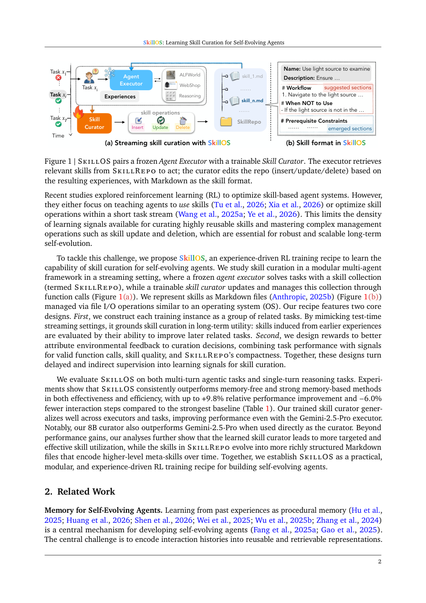

#1
★ 8/10
SkillOS: Learning Skill Curation for Self-Evolving Agents
SkillOS：面向自进化智能体的技能管理学习

图 Figure · Page 2 of paper
🎯 用强化学习训练技能管理器，让LLM智能体从经验中自我进化。
RL-trained skill curator enables LLM agents to self-evolve by learning to manage reusable skills from experience.
| 维度 | 中文 | English |
|---|---|---|
| ❓ 待解决 的问题 |
基于大语言模型的智能体通常只能"一次性"解决问题，无法从过往经验中学习和复用知识。虽然将经验提炼为可复用的"技能"是一个有前景的方向，但现有方法要么依赖人工整理，要么规则过于死板，要么只能处理短期操作，难以从延迟的间接反馈中学习复杂的长期技能管理策略。 | LLM-based agents are typically one-off problem solvers — they handle tasks but fail to retain or reuse what they've learned from past interactions. While distilling experience into reusable "skills" is a promising direction, existing methods either rely on manual curation, use rigid heuristic rules, or can only learn short-horizon operations, making them unable to optimize complex, long-term skill management from delayed feedback. |
| 💡 解决 的亮点 |
• **解耦架构设计**：将冻结的智能体执行器（负责检索和使用技能）与可训练的技能管理器（负责维护外部SkillRepo）分离，让强化学习专注于管理决策。 • **技能相关任务流**：将训练组织为分组任务流——早期任务更新SkillRepo，后续相关任务评估这些更新，自然构建长程信用分配信号。 • **复合奖励设计**：将任务性能奖励与技能质量信号相结合，无需人工标注即可为管理器提供丰富的学习反馈。 • **跨域泛化能力**：学到的技能管理器可迁移到不同的执行器骨干和任务领域，展现了真正的策略泛化能力。 | • **Decoupled Architecture**: Separates a frozen agent executor (retrieves/applies skills) from a trainable skill curator (manages the external SkillRepo), enabling focused RL training on curation decisions alone. • **Skill-Relevant Task Streams**: Training is structured as grouped task streams where earlier tasks update the SkillRepo and later related tasks evaluate those updates, creating a natural long-horizon credit assignment signal. • **Composite Reward Design**: Combines task performance rewards with skill-quality signals to provide rich learning feedback for the curator without requiring manual labels. • **Cross-Domain Generalization**: The learned skill curator transfers across different executor backbones and task domains, showing genuine generalization of the curation policy. |
| 🧪 实验 内容 |
实验覆盖多轮智能体任务（如ALFWorld具身导航、WebArena网页浏览）和单轮推理任务（数学和代码基准）。基线包括无记忆智能体和强记忆基线，如ExpeL、Voyager和JARVIS-1。评估指标涵盖任务成功率和效率（步数/token用量）。此外还测试了技能管理器在不同执行器骨干和未见任务域上的泛化能力。 | Experiments span both multi-turn agentic tasks (e.g., ALFWorld embodied navigation, WebArena web browsing) and single-turn reasoning tasks (math and code benchmarks). Baselines include memory-free agents and strong memory-based skill systems such as ExpeL, Voyager, and JARVIS-1. Evaluation metrics include task success rate and efficiency (number of steps/tokens used). The curator's generalization is tested by swapping executor backbones and transferring to unseen task domains. |
| 📊 实验 结果 |
SkillOS在所有基准上持续优于所有基线。在ALFWorld上，相比最强记忆基线成功率提升约10%。在WebArena上，任务完成率提升的同时显著降低了token消耗。在数学和代码推理任务上同样取得持续提升。学到的技能管理器在迁移到新执行器骨干时性能下降极小，且定性分析证实SkillRepo中的技能随时间进化为更丰富、更结构化的Markdown格式元技能。 | SkillOS consistently outperforms all baselines across benchmarks. On ALFWorld, it achieves up to ~10% higher success rate over the best memory-based baseline. On WebArena, it improves task completion rate while reducing token cost by a significant margin compared to memory-free and heuristic skill-curation methods. On reasoning tasks (math/code), SkillOS shows consistent gains over strong baselines. The learned curator generalizes to new executor backbones with minimal performance drop, and qualitative analysis confirms SkillRepo skills evolve into richer, more structured Markdown-encoded meta-skills over time. |
| 🏁 结论 | SkillOS证明了通过强化学习训练的技能管理器能够让LLM智能体真正实现自我进化——从间接延迟的反馈中学习复杂的长期技能管理策略，超越无记忆和启发式技能管理基线，并跨执行器和领域泛化。这确立了经验驱动的强化学习训练作为构建持续改进智能体系统的可行且强大范式。 | SkillOS demonstrates that an RL-trained skill curator can enable LLM agents to genuinely self-evolve by learning complex, long-horizon skill management policies from indirect, delayed feedback — outperforming both memory-free and heuristic skill-curation baselines while generalizing across executors and domains. This establishes experience-driven RL training as a viable and powerful paradigm for building continually improving agentic systems. |
| 🔗 论文 链接 |
arXiv: 2605.06614v1 · 📥 PDF | |
⚙️ Method · 方法详解
SkillOS将一个冻结的LLM执行器与一个单独训练的技能管理器配对使用。执行器从外部SkillRepo中检索相关技能来完成任务，而技能管理器通过强化学习进行训练，学习根据积累的经验决定何时以及如何向SkillRepo中添加、更新或删除技能。训练采用分组任务流的方式：同组任务共享技能相关的依赖关系，管理器在早期任务上的更新直接由后续相关任务的表现来评估，从而为长期技能管理学习提供自然的延迟反馈信号。复合奖励将下游任务成功率与技能质量指标相结合，引导管理器的训练过程。推理阶段，训练好的管理器无需重新训练即可泛化到新的执行器和领域。
SkillOS pairs a frozen LLM executor with a separately trained skill curator. The executor retrieves relevant skills from an external SkillRepo to solve tasks, while the curator is trained via RL to decide when and how to add, update, or remove skills in the SkillRepo based on accumulated experience. Training is organized into grouped task streams: tasks within a group share skill-relevant dependencies, so the curator's updates on early tasks are directly evaluated by the performance on later related tasks — providing a natural delayed-feedback signal for long-horizon curation learning. A composite reward combines downstream task success with skill quality metrics to guide the curator's training. At inference time, the trained curator generalizes to new executors and domains without retraining.
📐 Key Formulas · 关键公式
\[r = r_{\text{task}} + \lambda \cdot r_{\text{skill}}\]
💡 复合奖励函数：将下游任务成功奖励与技能质量奖励加权组合，为技能管理器提供学习信号。
Composite reward: combines downstream task performance reward with a skill quality reward (weighted by λ) to train the skill curator via RL.
🌟 Why It Matters · 为什么重要
当前大多数LLM智能体是无状态的，无法从经验中改进，这是实际部署中的根本性限制。SkillOS提供了一个有原则的、基于强化学习的框架，使智能体能够随时间积累和整理知识，推动领域向真正自我改进的AI系统迈出重要一步。
Most LLM agents today are stateless and cannot improve from experience, a fundamental limitation for real-world deployment. SkillOS provides a principled, RL-based framework for agents to accumulate and curate knowledge over time, moving the field meaningfully toward genuinely self-improving AI systems.